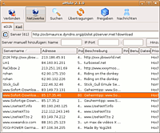

amule
Dieser Artikel wurde für die folgenden Ubuntu-Versionen getestet:
Dieser Artikel ist mit keiner aktuell unterstützten Ubuntu-Version getestet! Bitte diesen Artikel testen und das getestet-Tag entsprechend anpassen.
Zum Verständnis dieses Artikels sind folgende Seiten hilfreich:
aMule ("all-platform Mule")  ist ein freier und plattformunabhängiger Client für das eDonkey2000-Netzwerk (ed2k) welches mit zu den größten Filesharingnetzwerken gehört. aMule selbst ist ein Nachbau der Windowssoftware eMule und ist zu dieser völlig kompatibel, wie auch zu allen anderen Clients, die das ed2k-Netzwerk verwenden.
ist ein freier und plattformunabhängiger Client für das eDonkey2000-Netzwerk (ed2k) welches mit zu den größten Filesharingnetzwerken gehört. aMule selbst ist ein Nachbau der Windowssoftware eMule und ist zu dieser völlig kompatibel, wie auch zu allen anderen Clients, die das ed2k-Netzwerk verwenden.
Installation¶
 Folgendes Paket muss als Grundlage installiert werden:
amule (universe)
 mit apturl
mit apturl
Paketliste zum Kopieren:
sudo apt-get install amule
sudo aptitude install amule
Danach kann das Programm als amule oder aus dem Gnome-Menü "Anwendungen -> Internet -> aMule" gestartet werden.
Verbindung herstellen¶
Allgemeines¶
Wie bei jeder Internetanwendung, muss darauf geachtet werden, dass die verwendeten Ports von aMule nicht durch eine eventuell vorhandene Firewall (sei es intern oder extern) blockiert werden oder schon einem anderen Rechner im lokalen Netzwerk zugewiesen wurden. Die verwendeten Ports können bei aMule unter "Einstellungen/Verbindung" frei bestimmt werden. Weitere Tipps finden sich auf emule-project.net  und hier .
und hier .
Server¶
Um Verbindung mit dem ed2k-Netzwerk aufzunehmen, bietet sich am Anfang an, die zentrale (Server-gestützte) Methode zu verwenden. Falls aMule dies nicht schon direkt bei Programmstart getan hat (zu Erkennen an den Symbolen ganz unten rechts), wählt man im Hauptfenster "Server" und  -klickt links oben auf das Symbol neben der schon eingetragenen Internetadresse, um eine frische Liste laden zu lassen. Anschließend wird die Verbindung mittels eines Klicks auf "Verbinden" oben in der Symbolleiste hergestellt.
-klickt links oben auf das Symbol neben der schon eingetragenen Internetadresse, um eine frische Liste laden zu lassen. Anschließend wird die Verbindung mittels eines Klicks auf "Verbinden" oben in der Symbolleiste hergestellt.
Kademlia¶
Server zu verwenden bringt allerlei Nachteile mit sich. Der dezentrale Kademlia-Algorithmus (kad) ist deshalb immer die bessere Wahl, braucht aber beim ersten Start einmalig Hilfestellung durch eine bestehende Serververbindung. kad lässt sich unter "Einstellungen/Verbindung" im unten stehenden Abschnitt "Netzwerke" aktivieren. Zu Beginn steht beim Verbindungsstatus (wieder ganz unten rechts) bei kad immer "Firewalled", dies sollte sich jedoch spätestens nach ca. 5 Minuten ändern. Falls nicht, ist der verwendete UDP-Port anscheinend nicht zu erreichen. Sobald kad einmal an Fahrt aufgenommen hat, kann die Server-gestützte Methode getrost deaktiviert werden, indem wieder unter "Einstellungen/Verbindung" der Haken bei "ed2k" entfernt wird.
Um auf Server gänzlich zu verzichten, lässt sich bei Bedarf auch eine vorgefertigte Liste für kad manuell von nodes-dat.com laden. Die Datei nodes.dat muss dabei im Verzeichnis von aMule platziert werden.
Optimieren¶
aMule kommt von Haus aus mit recht moderaten Verbindungseinstellungen daher. Diese funktionieren einwandfrei, können aber hier und da noch etwas auf den persönlichen Anschluss abgestimmt werden. Interessant sind die "maximalen Verbindungen" unter "Einstellungen/Verbindung", sowie die "maximalen Verbindung pro 5 Sekunden" unter "Einstellungen/Erweitert". Erstere Option bestimmt, wie viele Verbindungen insgesamt gehandhabt werden; letztere wie schnell Verbindungen aufgebaut werden. Für aMule selbst gilt bei beiden: Desto höhere Werte desto besser! Allerdings reagieren vornehmlich ältere Router und/oder Modems empfindlich auf zu viele Verbindungen, sodass es hier zur Überlastung, im schlimmsten Fall gar zum Absturz kommen kann. Halbwegs moderne und qualitative Geräte sollten an die 500 Maximalverbindungen (statt 200) und ca. 40 Verbindungen pro 5 Sekunden (statt 20) aushalten. Dies sind aber nur ungefähre Anhaltspunkte und sollten individuell getestet werden.
Tipps¶
Fakes entlarven¶
Beim Filesharing spricht man von einem Fake (einer Fälschung), wenn eine Datei - oder anders gesagt ein Download - einen falschen Namen hat. So könnte beispielsweise eine Datei "ubuntu-lucid.iso" heißen, tatsächlich aber ein Film oder sonstiges sein. Dies ergründet sich auf der Tatsache, dass Dateien nicht anhand ihrer Benennung identifiziert werden, sondern an ihrer Prüfsumme. Der Dateiname kann beliebig geändert werden, und man kann sich denken, dass hier oft Schabernack getrieben wird. Es gibt zwei Möglichkeiten einen Fake frühzeitig zu erkennen:
Nachdem der Download der Datei gestartet wurde, wartet man im Hauptfenster kurz ab, bis einige Quellen gefunden wurden. Nun einen Rechtsklick auf die Datei und "Zeige Dateieigenschaften" gewählt. Im unten stehenden Feld des sich öffnenden Fensters werden nun alle Namen für diese Datei aufgelistet und wie viele der gefundenen Quellen (Benutzer) den jeweiligen Namen verwenden. Hat man nun die Datei unter dem Namen "ubuntu-lucid.iso" gefunden, verwenden aber nur 1-2 Quellen diesen Namen, und entgegen 50 Quellen z.B. den Namen "big_buck_bunny.avi", kann man sich sicher sein, dass man hier eher den Film als das Ubuntu-Image lädt. Diese Methode funktioniert natürlich nicht immer, denn hat die Datei insgesamt nur 1-2 Quellen, kann man diesen Vergleich kaum mehr anstellen.
Lädt man eine Video- oder Audiodatei, kann diese meist lange vor ihrer Fertigstellung vorab angeschaut/angehört und somit als echt verifiziert werden. Hierzu empfiehlt sich sehr der Medienspieler VLC. In aMule sollte nun in den Einstellungen unter "Dateien" die Option "Versuche, zuerst die ersten und letzten Dateiteile herunterzuladen" aktiviert werden. Anschließend in die Rubrik "Allgemein" wechseln und unten im Abschnitt "Videoplayer" z.B. den Befehl
vlceintragen. Die darunter stehende Option zur Erstellung einer Kopie ist mit VLC nicht nötig. Nun muss nur ein kleiner Teil am Anfang der Datei heruntergeladen werden um diese bereits vor der Fertigstellungen mittels -Klick/Vorschau im VLC kurz anschauen zu können. Sollte der Punkt "Vorschau" nicht anwählbar sein, sind entweder noch nicht genug Daten übertragen worden (abzuschätzen am Fortschrittsbalken) oder die Datei ist eben keine Video-/Audiodatei und somit wieder ein Fake.
-Klick/Vorschau im VLC kurz anschauen zu können. Sollte der Punkt "Vorschau" nicht anwählbar sein, sind entweder noch nicht genug Daten übertragen worden (abzuschätzen am Fortschrittsbalken) oder die Datei ist eben keine Video-/Audiodatei und somit wieder ein Fake.
aMules Daemon¶
Wie alle Filesharingprogramme, sollte auch aMule über längere Zeit -wenn nicht sogar rund um die Uhr- laufen. Möchte man am selben Rechner aber noch andere Dinge tun, empfiehlt sich amuled, welches als Daemon im Hintergrund arbeitet und dabei wesentlich weniger Anspruch an Prozessor und Arbeitsspeicher stellt. Da er keine grafische Benutzeroberfläche besitzt, kann der Daemon auch auf einem Server installiert und ferngesteuert werden. Folgendes Paket muss nachinstalliert werden:
amule-daemon (universe )
mit apturl
Paketliste zum Kopieren:
sudo apt-get install amule-daemon
sudo aptitude install amule-daemon
Nachdem man nun bei aMule alle Einstellungen getätigt und es beendet hat, öffnet man mit einem Texteditor[4] die Datei amule.conf im Ordner von aMule. Dort muss beim Eintrag AcceptExternalConnections=0 die anstehende 0 in 1 geändert werden. Nun startet man amuled einmalig mit folgendem Befehl:
amuled --ec-config
Hier legt man nun ein Passwort fest und startet amuled fortan mit dem gleichen Befehl ohne anstehende Option --ec-config.
Achtung!
Der Daemon öffnet am System einen zusätzlichen Port, über welchen er ferngesteuert werden kann. Es ist deshalb wichtig, ein sicheres Passwort zu wählen, damit keine Fremdperson Down- und Uploads starten kann.
Zusätzlich kann in der Datei amule.conf am Punkt ECAddress= eine berechtigte IP-Adresse eingetragen werden, damit Anmeldeversuche von allen anderen Adressen ignoriert werden, selbst wenn das Passwort korrekt sein sollte. Betreibt man den Daemon nur lokal, um Systemressourcen zu sparen, empfiehlt es sich, ihn an die Adresse 127.0.0.1 zu binden, damit alle externen Zugriffsversuche abgelehnt werden.
Um den Daemon mit dem System starten und beenden zu lassen finden sich im amule-Wiki einige Ratschläge.
aMule oder den Daemon fernsteuern¶
Ein weiteres Zusatzprogramm ist amulecmd. Dabei handelt es sich um ein Terminalprogramm, mit welchen sich Befehle an aMule bzw. amuled senden lassen, sowohl auf demselben Rechner als auch im lokalem Netzwerk und übers Internet. amulecmd befindet sich zusammengefasst mit anderen Zusatzprogrammen in folgendem Paket:
amule-utils (universe )
mit apturl
Paketliste zum Kopieren:
sudo apt-get install amule-utils
sudo aptitude install amule-utils
Um beispielsweise den Daemon auf demselben Rechner zu steuern, sollte es genügen, amulecmd ohne Optionen aufzurufen:
amulecmd
Der Daemon sollte eigenständig gefunden und anschließend nach dem Passwort gefragt werden. Nun übernimmt amulecmd das Terminal, und es können Befehle erteilt werden. Eine Auflistung erhält man durch den Befehl help.
Befindet sich aMule/amuled auf einem anderen Rechner, muss dieser beim Aufruf von amulecmd angegeben werden, bspw.:
amulecmd -h 123.456.7.89 -p 666
Bei diesem Beispiel soll amulecmd sich mit dem Rechner verbinden, dessen Adresse (-h = Host) 123.456.7.89 und dessen Port (-p = Port) 666 ist.
ed2k-Links per Browser übernehmen lassen¶
Wenn man im Firefox auf einen ed2k-Link klickt, wird man mit einer Fehlermeldung begrüßt. Das ist natürlich nicht Sinn der Sache.
Das kann man auch sehr leicht ändern. Zunächst muss folgendes Paket installiert werden:
amule-utils (universe )
mit apturl
Paketliste zum Kopieren:
sudo apt-get install amule-utils
sudo aptitude install amule-utils
Danach im Firefox "about:config" in die Adresszeile eingeben und per Rechtsklick folgende Werte hinzufügen:
network.protocol-handler.external.ed2k boolean true network.protocol-handler.app.ed2k string /usr/bin/ed2k network.protocol-handler.expose.ed2k boolean false
Dann auf einen ed2k-Link klicken. Firefox fragt, mit welcher Anwendung er geöffnet werden soll. "/usr/bin/ed2k" auswählen, dann sollte es funktionieren.
Nun kann man mit einem Klick auf einen ed2k-Link einen Ladevorgang ("download") in die Liste einfügen. Leider bekommt man mit dieser Variante keine Rückmeldung, ob dies erfolgreich war.
Hier ein kleines Skript (nur für GNOME), das zuerst eine optische Meldung ausgibt:
#!/bin/bash FILENAME="$(echo $1 | cut -d'|' -f3 | sed 's/%20/ /g')" gdialog --msgbox "<b>Datei wurde der Liste hinzugefügt</b> $FILENAME" /usr/local/bin/ed2k $1
Einfach unter ~/.ed2khandler speichern und network.protocol-handler.app.ed2k auf ~/.ed2khandler setzen.
Nun bekommt man zuerst ein kleines Hinweisfenster, dass der Ladevorgang hinzugefügt wurde.
- Erstellt mit Inyoka
-
 2004 – 2017 ubuntuusers.de • Einige Rechte vorbehalten
2004 – 2017 ubuntuusers.de • Einige Rechte vorbehalten
Lizenz • Kontakt • Datenschutz • Impressum • Serverstatus -
Serverhousing gespendet von